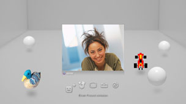

Freunde > Sprach-/Video-Chat > Starten und Beenden eines Sprach-/Video-Chats
Starten und Beenden eines Sprach-/Video-Chats
Sie müssen eventuell die System-Software aktualisieren, bevor Sie diese Funktion verwenden können.
Sie können einen Sprach-/Video-Chat mit Personen in Ihrer Liste der Freunde abhalten. Für einen Sprach-Chat benötigen Sie ein Audio-Ein-/-Ausgangsgerät (z. B. ein Headset, separat erhältlich). Für einen Video-Chat benötigen Sie außerdem eine USB-Kamera (separat erhältlich).
Starten eines Sprach-/Video-Chats
1. |
Wählen Sie |
|---|---|
2. |
Wählen Sie |
3. |
Wählen Sie aus dem angezeigten Menü die Option |
4. |
Geben Sie eine Nachricht ein und wählen Sie [Senden].  Sobald die Person an dem Chat teilnimmt, wird sein oder ihr Bild angezeigt und der Sprach-/Video-Chat beginnt. |
 (Freunde) >
(Freunde) >  (Neuen Chat starten).
(Neuen Chat starten). (Sprach-Chat/Video-Chat).
(Sprach-Chat/Video-Chat). (Einen Freund einladen).
(Einen Freund einladen).Anmerkungen
- Das PS3™-System unterstützt Sprach- und Video-Chats. Weitere Chat-Optionen, z. B. Chatten beim Spielen, stehen möglicherweise über entsprechende Spielsoftware zur Verfügung. Erläuterungen dazu finden Sie in den mit der verwendeten Software gelieferten Anweisungen.
- Zum Chatten müssen Sie am PSNSM angemeldet sein.
- Obwohl Sie mehrere Freunde zu einem Chat einladen können, werden nur die Avatars der ersten fünf ausgewählten Freunde angezeigt.
- Bis zu sechs Personen können einem Chat-Raum beitreten.
- Die Sprach-/Video-Chat-Funktion steht nicht zur Verfügung, wenn ihre Nutzung eingeschränkt ist. Informationen zu Kindersicherungseinstellungen finden Sie unter [Informationen zum XMB™-Menü] > [Verwenden der Einstellungen der Kindersicherungsfunktion] in diesem Handbuch.
- Sie können ein kompatibles USB- oder Bluetooth®-Headset, eine EyeToy™ USB-Kamera, eine PlayStation®Eye-Kamera oder eine mit der USB-Videoklasse (UVC) kompatible USB-Kamera an das PS3™-System anschließen.
- Wenn Sie eine USB-Kamera über einen USB-Hub anschließen, verwenden Sie einen Hub, der USB 2.0 unterstützt. Bei einem Hub, der USB 2.0 nicht unterstützt, kann es zu einer Verschlechterung der Bildqualität kommen oder das Bild wird gar nicht angezeigt.
- Informationen zu unterstützten Peripheriegeräten und Anweisungen zum Gebrauch erhalten Sie bei dem Händler, der die Peripheriegeräte anbietet.
Verlassen des Chat-Raums (Beenden eines Sprach-/Video-Chats)
Wählen Sie während des Chats  (Verlassen) aus dem Bedienfeld.
(Verlassen) aus dem Bedienfeld.
Anmerkung
Wenn die Person, die den Sprach-/Video- Chat initiiert hat, den Chat-Raum verlässt, wird der Chat-Raum geschlossen.